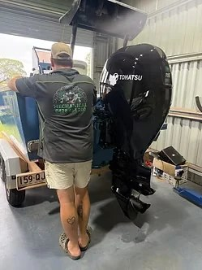
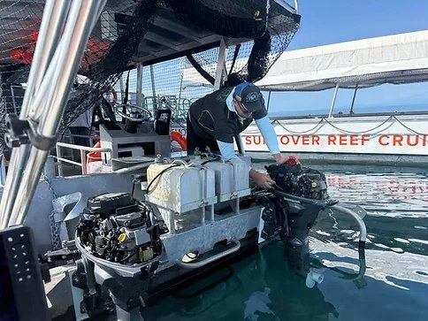
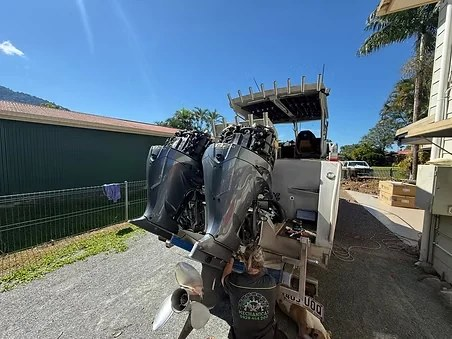

Experience you can trust
More than 25 years of hands-on mechanical experience.
Trade-qualified across marine, motorcycle and machinery work, with OEM training behind the workshop experience.
The way we work
Find the fault. Explain the job. Do it properly.
Good mechanical work starts with understanding the machine and the problem, not guessing at parts.
That means proper diagnostics, careful workmanship and clear advice about what needs doing now, what can wait and what the job will involve.
The business operates from Babinda with mobile service throughout Cairns, Far North Queensland and Cape York — roughly from Ingham to the tip.

Training & experience
OEM training across major brands.
Yamaha OEM factory trained, with additional OEM training across a broad range of marine, motorcycle and machinery brands.


Three simple principles
Quality workmanship. Accurate diagnostics. Honest advice.
The goal is not to make a job sound bigger than it is. It is to understand the machine, fix the actual problem and send it back out ready to work.